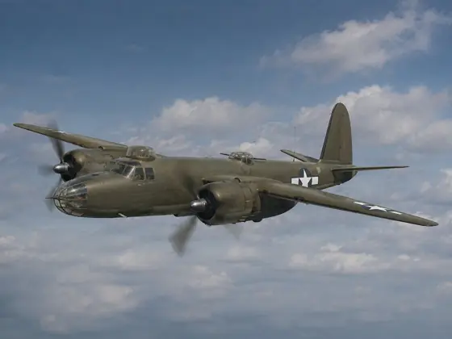

B-25 operations · 1941–1945
The B-25 Mitchell was a medium bomber, gunship, skip-bomber, anti-shipping aircraft and patrol bomber. It fought from the Doolittle Raid to North Africa, Italy, Burma, New Guinea and the Pacific islands. A good model starts by choosing the role: early Doolittle B-25B, glass-nose bomber, solid-nose strafer, B-25G/H cannon-nose aircraft, late B-25J or USMC PBJ.

Role & strengths
- USAAF medium bomber, low-level strafer and skip-bomber
- Doolittle Raid, Mediterranean, CBI, New Guinea, Pacific and USMC PBJ routes
- Glass nose, solid gun nose, cannon nose and late J-model variants
- Olive Drab/Neutral Grey, natural metal, US stars-and-bars and nose art
- Radial exhaust, oil staining, chipped walkways, coral dust and gun soot
Key theatres
- Doolittle Raid from USS Hornet
- North Africa, Italy and Mediterranean bombing
- New Guinea low-level strafing and skip bombing
- USMC PBJ maritime patrol in the Pacific
Specification B-25J
Survivors today
Surviving B-25s are useful for nose shape, cockpit framing, turrets, side guns, nacelles, undercarriage, bomb bay and weathering layout, but restored paint schemes still need subject checking.
View survivorsTimeline highlights
Build this B-25 as…
Pick the nose and theatre first. A Doolittle B-25B, Mediterranean glass-nose bomber, Pacific strafer, B-25G/H cannon ship and PBJ patrol bomber all need different details.
Aircraft identity
B-25B/C/D/G/H/J and PBJ aircraft are not interchangeable. The nose, guns, turrets and markings must match the subject.
Pacific strafers can be filthy, but Mediterranean and Doolittle aircraft need different restraint. Theatre matters.
Paint scheme cards
Doolittle and early bomber routes use OD/Neutral Grey with restrained wear.
Low-level strafers need faded paint, dust, oil, gun staining and hard-used nacelles.
Late B-25Js can use natural metal, but panel variation should be subtle.
PBJ routes need maritime patrol weathering, radar/antenna checks and USMC markings.
Campaign cards
B-25B aircraft with clean early-war finish, carrier take-off context and very specific markings.
Bomb Groups in North Africa/Italy with dusty OD, nose art and medium-bomber weathering.
Solid-nose strafers with heavy guns, skip-bombing, dust, oil and brutal low-level wear.
Marine patrol route with naval colours, radar/antenna options and maritime grime.
Build difficulty and related guides
High. Twin-engine alignment, turrets, glazing, guns and bomb loads need careful sequencing.
Very high. Nose and turret choices can make or break accuracy.
High. Pacific, Mediterranean, natural metal and PBJ routes need different treatment.
B-25 Bomb Groups and Marine PBJ units
Sortable B-25 unit cards covering Doolittle Raid, Mediterranean, CBI, New Guinea strafers, cannon-nose aircraft, USMC PBJs and survivor/reference routes.
B-25 operating map
Airfield info
Click a marker to show linked B-25 unit cards and modelling notes.
Campaign timeline
Survivors
Books and reference sources
B-25 build guide
B-25 videos, photos and archive material
Media replaces the old separate walkaround tab: cockpit, exhaust, undercarriage, markings, survivor references, archive imagery and video cards are grouped here.